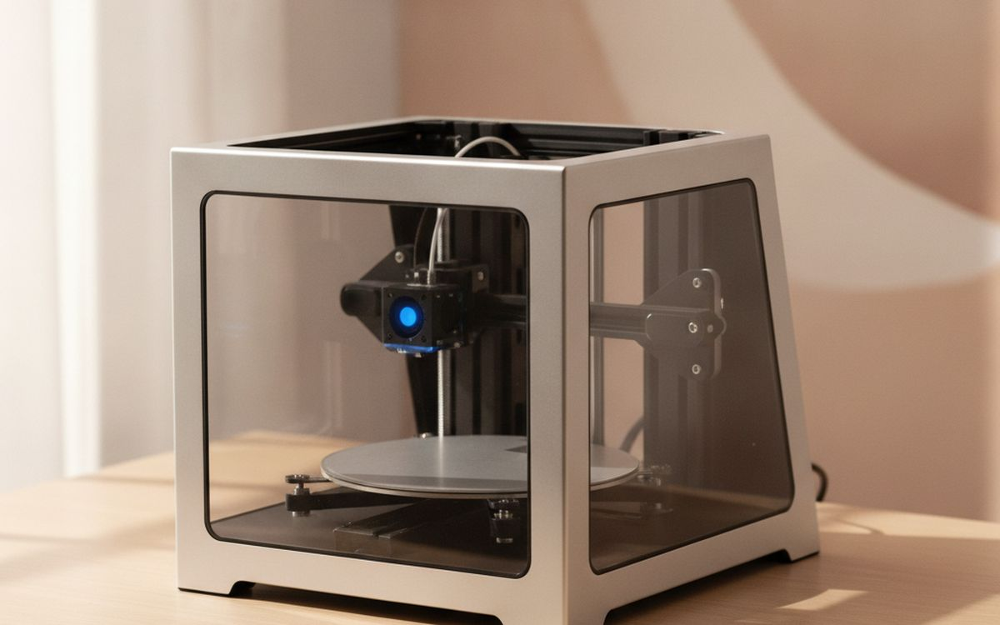
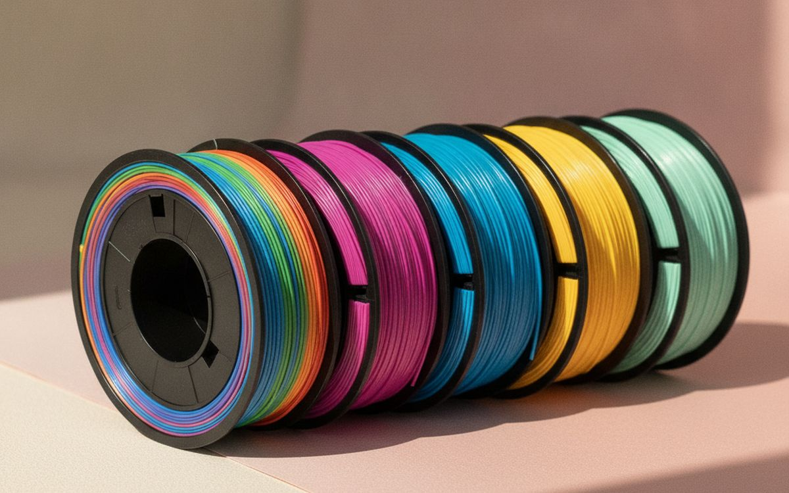
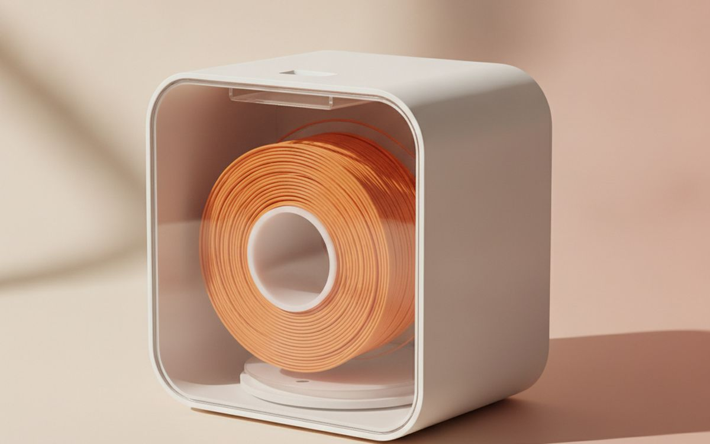
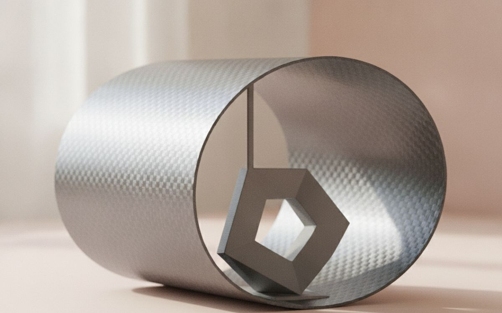
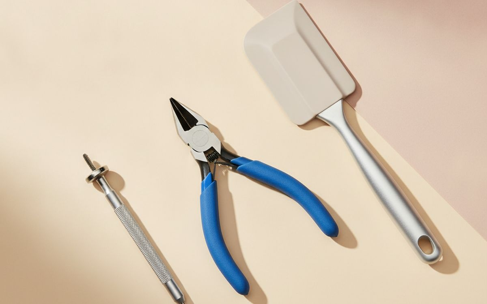
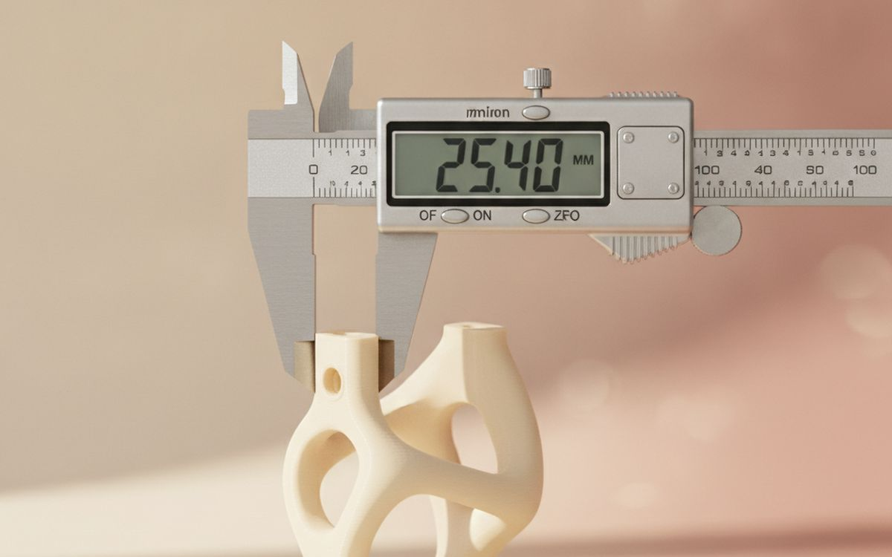
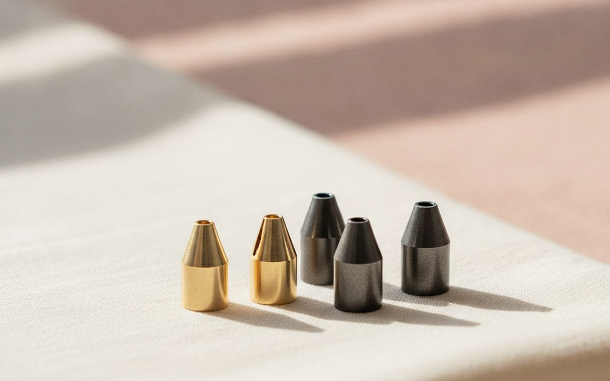
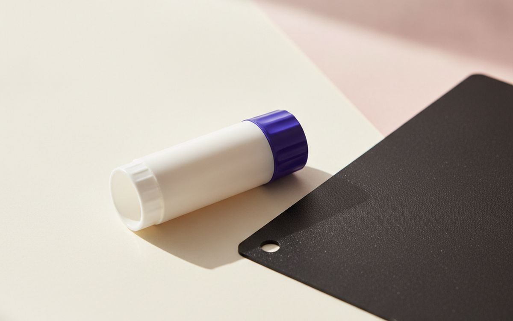
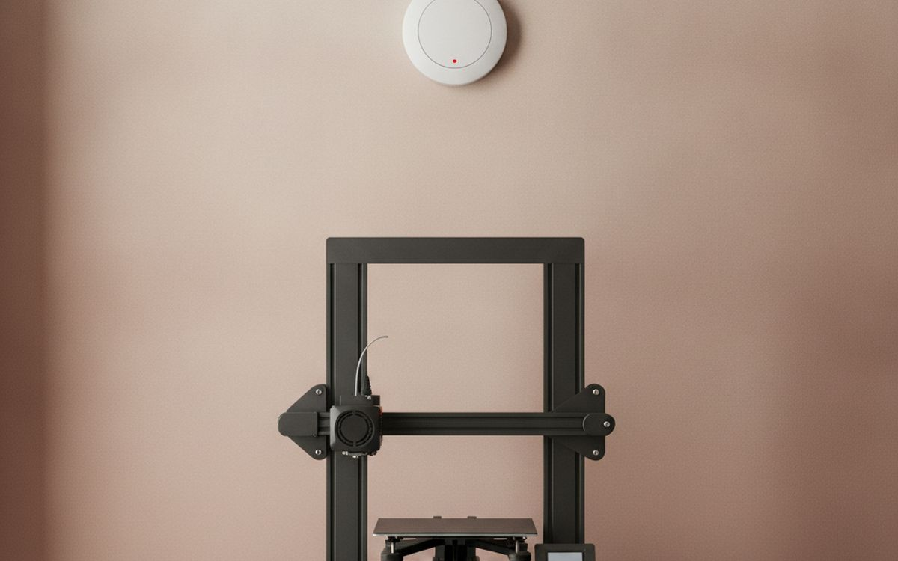
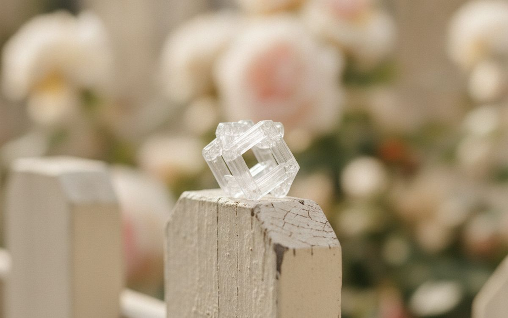

Five years ago, a first 3D printer meant weeks of levelling beds, tightening belts and reading forum threads at midnight. Today's beginner machines mostly work out of the box. The frustration has moved: it is now in cheap filament that snaps, damp spools, prints that will not stick, and not knowing which small tools you need.
So this list starts with the printer, then covers the handful of cheap extras that decide whether your first month is fun or a pile of spaghetti. Most of the accessories cost less than a single spool of premium filament.
Prices below are approximate street prices at the time of writing and move around constantly, especially during sale events. Treat them as a rough band for budgeting, not a quote. Always check the live listing before you buy.
En bref
An auto-levelling printer from a major brand
The printer to start on
Transparence. Les liens de cette page sont des liens affiliés. Si vous achetez via l’un d’eux, nous pouvons percevoir une commission sans surcoût pour vous. Cela n’influence ni le contenu de cette liste ni son ordre.
Comment nous avons choisi
These picks come from published printer reviews, maker forums and long-run owner reports, cross-checked against current retail listings. We have not personally tested every item here. We favoured machines that print well with default settings, because a beginner should be learning to design and slice, not to repair.
En un coup d’œil
Les prix sont indicatifs au moment de la rédaction et changent souvent.
Notre sélection

01 · The printer to start onAn auto-levelling printer from a major brand
Buy a machine with automatic bed levelling and a large, active user community. Bambu Lab's A1 and A1 Mini, Prusa's Mini and Core line, and Creality's newer K1 and Ender V3 models all print well with default settings and have huge libraries of tested profiles. Automatic levelling removes the step that ended most beginners' interest in the old days. Community size matters more than it sounds: when something goes wrong, a popular printer has a thousand answered forum threads. Pick a bed size for what you want to make, not the biggest you can afford. The case for it: prints well out of the box, automatic levelling removes the worst beginner step, and large community and tested profiles. The trade-off is real: some brands lock you into their own cloud or parts and printers are noisy; plan where it lives, so weigh that against how often it would actually get used.
$200-450Le compromis: Some brands lock you into their own cloud or parts
Pourquoi il est là
- Prints well out of the box
- Automatic levelling removes the worst beginner step
- Large community and tested profiles
Bon à savoir
- Some brands lock you into their own cloud or parts
- Printers are noisy; plan where it lives

02 · Almost every first projectPLA filament from a reputable maker
PLA is easy to print, low odour and good enough for most household parts, toys and models. Cheap no-name filament is the most common cause of mysterious failures: the diameter wanders, it snaps, and colours vary between spools. Known brands such as eSUN, Polymaker, Sunlu, Elegoo and the printer makers' own spools are consistent. Start with one neutral colour and one fun one. Buy it vacuum sealed with a desiccant packet, and keep it that way until you use it. The case for it: easiest material to print, low smell, safe for indoor use, and consistent from good brands. The trade-off is real: softens in a hot car or sunny window and cheap spools cause random failures, so weigh that against how often it would actually get used.
$15-25 per kgLe compromis: Softens in a hot car or sunny window
Pourquoi il est là
- Easiest material to print
- Low smell, safe for indoor use
- Consistent from good brands
Bon à savoir
- Softens in a hot car or sunny window
- Cheap spools cause random failures

03 · Damp spools and stringy printsA filament dryer or dry box
Filament absorbs moisture from the air, and wet filament prints with stringing, bubbles and weak layers. People blame the printer for weeks before realising the spool is the problem. A small heated dryer fixes damp spools in a few hours, and many double as a dry box you print from directly. In humid climates this moves from nice-to-have to essential, especially for PETG and nylon. The case for it: fixes stringing and weak prints, can feed the printer while drying, and protects expensive filament. The trade-off is real: adds a few hours before printing a damp spool and one spool at a time on most models, so weigh that against how often it would actually get used.
$35-70Le compromis: Adds a few hours before printing a damp spool
Pourquoi il est là
- Fixes stringing and weak prints
- Can feed the printer while drying
- Protects expensive filament
Bon à savoir
- Adds a few hours before printing a damp spool
- One spool at a time on most models

04 · Prints that stick, then releaseA textured PEI build plate
First-layer adhesion is where most prints fail. A spring steel plate with a textured PEI coating holds prints firmly while hot and releases them when cool, usually with a gentle flex. Many printers ship with one; if yours has a glass or smooth plate, this is the best upgrade you can buy. Get the size and magnet type that matches your printer model exactly. Wash it with warm water and dish soap now and then; fingerprints are the enemy. The case for it: prints stick well while hot, pop off with a flex once cool, and leaves a neat textured underside. The trade-off is real: must match your printer's bed size exactly and coating wears; it is a slow consumable, so weigh that against how often it would actually get used.
$15-30Le compromis: Must match your printer's bed size exactly
Pourquoi il est là
- Prints stick well while hot
- Pop off with a flex once cool
- Leaves a neat textured underside
Bon à savoir
- Must match your printer's bed size exactly
- Coating wears; it is a slow consumable

05 · Removing supports and cleaning partsA starter tool kit
Printed parts come off with support material, stringy bits and rough edges. A basic kit with flush cutters, a deburring tool, needle files, a thin spatula and tweezers handles all of it. You can assemble these individually, but a starter kit made for 3D printing is cheaper and everything fits in one pouch. Keep the spatula for the bed and never use metal scrapers on a PEI sheet. The case for it: cleans up every print, removes supports without breaking parts, and keeps everything in one place. The trade-off is real: kit quality varies; the cutters matter most and sharp blades need a safe home away from kids, so weigh that against how often it would actually get used.
$15-30Le compromis: Kit quality varies; the cutters matter most
Pourquoi il est là
- Cleans up every print
- Removes supports without breaking parts
- Keeps everything in one place
Bon à savoir
- Kit quality varies; the cutters matter most
- Sharp blades need a safe home away from kids

06 · Designing parts that fitDigital calipers
The best part of owning a printer is making the exact bracket, knob or clip you need. That means measuring things precisely. Digital calipers read to a hundredth of a millimetre and measure outside, inside and depth. A $20 pair is accurate enough for home printing. You will use them for designing parts, checking filament diameter and a hundred other jobs around the house. The case for it: makes custom parts fit first time, useful well beyond printing, and accurate enough at a low price. The trade-off is real: cheap batteries drain if left on and plastic calipers are less precise than steel, so weigh that against how often it would actually get used.
$15-30Le compromis: Cheap batteries drain if left on
Pourquoi il est là
- Makes custom parts fit first time
- Useful well beyond printing
- Accurate enough at a low price
Bon à savoir
- Cheap batteries drain if left on
- Plastic calipers are less precise than steel

07 · Clogs and wearSpare nozzles
Nozzles clog and wear, and a clog always happens on a Sunday evening. Keep a few spare nozzles in your printer's exact type and size, usually 0.4mm. Some newer printers use quick-swap hotends, which are pricier but easier. If you plan to print glow-in-the-dark or carbon-filled filament, get a hardened steel nozzle, because those materials wear brass quickly. The case for it: fixes clogs in minutes, cheap to keep on hand, and lets you try different sizes. The trade-off is real: must match your hotend exactly and changing one hot takes care and gloves, so weigh that against how often it would actually get used.
$8-15Le compromis: Must match your hotend exactly
Pourquoi il est là
- Fixes clogs in minutes
- Cheap to keep on hand
- Lets you try different sizes
Bon à savoir
- Must match your hotend exactly
- Changing one hot takes care and gloves

08 · Stubborn first layersGlue stick or a bed adhesive
For parts that curl at the corners or materials that stick too well, a thin layer of washable glue stick or a purpose-made bed adhesive helps. It also acts as a release layer for PETG, which can bond so strongly to smooth PEI that it tears the coating. A single stick lasts months. This is the cheapest fix for warping on the page. The case for it: stops corners curling, protects the plate from PETG, and very cheap. The trade-off is real: needs cleaning off the plate now and then and not needed for most PLA on textured PEI, so weigh that against how often it would actually get used.
$5-12Le compromis: Needs cleaning off the plate now and then
Pourquoi il est là
- Stops corners curling
- Protects the plate from PETG
- Very cheap
Bon à savoir
- Needs cleaning off the plate now and then
- Not needed for most PLA on textured PEI

09 · Printing unattendedA fire-safe mat or tile and a smoke alarm
Printers run hot for hours, often overnight. Failures that cause fires are rare, but they happen, usually on cheap or modified machines. Stand the printer on a non-flammable surface, keep it away from curtains, and put a working smoke alarm in the room. It is dull advice, but it matters more than any upgrade here, and it costs very little. The case for it: reduces the real fire risk, cheap, and lets you print overnight with less worry. The trade-off is real: none worth worrying about and keep firmware updated; it includes safety checks, so weigh that against how often it would actually get used.
$15-35Le compromis: None worth worrying about
Pourquoi il est là
- Reduces the real fire risk
- Cheap
- Lets you print overnight with less worry
Bon à savoir
- None worth worrying about
- Keep firmware updated; it includes safety checks

10 · Parts for outdoors and heatPETG filament
Once you print practical parts, PLA's limits show: it softens in heat and gets brittle outside. PETG is tougher, handles heat and sun better, and is still fairly easy to print. It is the right choice for garden clips, car accessories and anything near a warm appliance. It strings more than PLA and loves moisture, so dry it first and tune retraction. The case for it: tougher and more heat resistant than PLA, good for outdoor parts, and still beginner-friendly. The trade-off is real: more stringing than PLA and sticks too well to smooth PEI without glue, so weigh that against how often it would actually get used.
$18-28 per kgLe compromis: More stringing than PLA
Pourquoi il est là
- Tougher and more heat resistant than PLA
- Good for outdoor parts
- Still beginner-friendly
Bon à savoir
- More stringing than PLA
- Sticks too well to smooth PEI without glue
Questions fréquentes
Is 3D printing still hard for beginners?
Much less than it was. A modern auto-levelling printer with good filament will print well on day one. The learning is now in design and slicing, which is the fun part.
What can I actually make?
Replacement parts, organisers, hooks, toys, cosplay pieces, planters and gifts. Free model sites like Printables and Thingiverse have millions of designs.
Is it safe indoors?
PLA is low odour and generally fine in a ventilated room. Materials like ABS and resin need proper ventilation. Always print on a fire-safe surface.
Resin or filament?
Filament for a first printer. Resin gives incredible detail for miniatures but involves messy chemicals, gloves and washing stations.
Les offres du jour
Voyez ce qui est en promotion en ce moment.
Offres →← Tous les guides
En tant que affilié AliExpress, nous percevons une commission sur les achats éligibles. Les prix et la disponibilité sont exacts à la date de publication et peuvent changer.